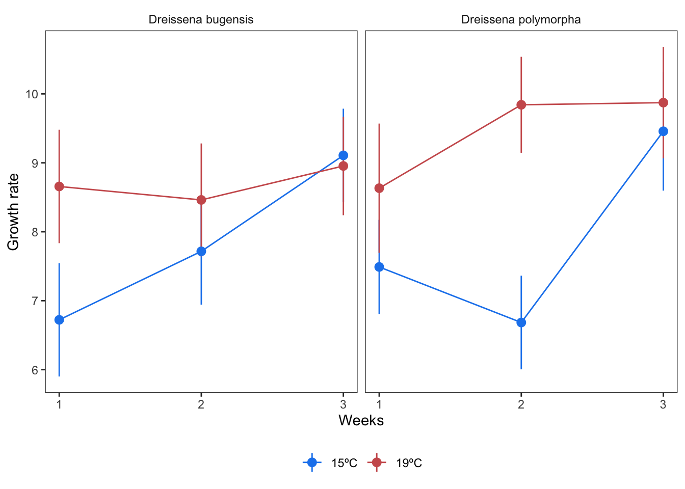
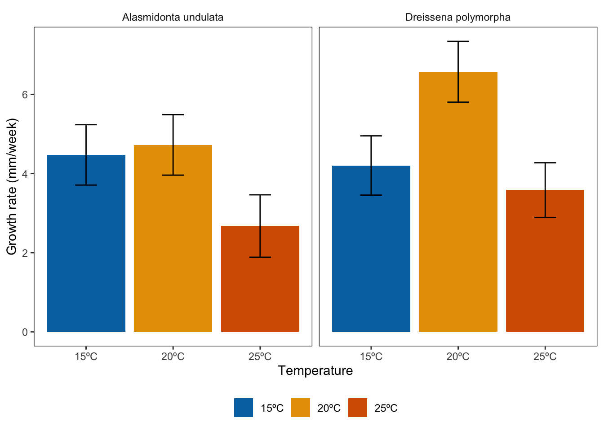

Universal extraction challenges
TipKey points
- Sample size is often hard to extract, and it matters for both the effect size and its sampling variance. Record which kind of sample size was used and how it was obtained.
- The unit of replication should be recorded for every study, because mismatches change how much weight a study gets in your meta-analytic models.
- Repeated measures, shared controls and clustered data create non-independence that the model has to account for. Use random effects as well as a variance-covariance matrix, as produced by
metafor::vcalc - Design your database to allow easy filtering for sensitivity analyses.
There are a suite of challenges, regardless of effect size type, that challenge accurate and robust meta-analysis. We’ll discuss some of them here. Note that many of our examples pertain especially to the ecology and evolution literature yet we suspect they are pervasive and widespread.
Sample size
Sample size can be devilishly tricky to extract from author text. Yet sample size is essential to accurately calculating effect size point estimates and sampling variance. As we review elsewhere, sample size is necessary to convert author-reported estimates of or confidence intervals to —a key summary statistic necessary to calculate SMD and lnRoM effect sizes.
For example, imagine you are meta-analyzing the effects of some treatment (say logging) on ungulate abundance. Imagine that one study did spotlight surveys from a vehicle and reported mean±error ungulate abundance. There are multiple dimensions of sample size here: the number of spatially distinct surveys, the number of survey nights, and the number of kilometers driven. If the authors reported in their data summaries, then you must figure out the sample size used by the authors in order to convert the author-reported standard error to .
Sample size also introduces questions about comparability between studies. Imagine a second study in the same meta-analysis also looked at the effect of logging on ungulate abundance. However, this study used camera traps, where the sample size would be number of camera trap nights or number of camera trap locations.
Are these two sample sizes comparable? We don’t know. There are likely many more camera trap nights than spotlight surveys yet the camera traps only cover a small field of view (but for many nights) while the spotlight surveys could cover dozens of kilometers (but over fewer nights). We believe it is worth recording the different dimensions of sample size in your meta-analysis dataset and to conduct sensitivity analyses to ensure that your results are robust to these sources of methodological heterogeneity.
ImportantSummaries of clustered, non-independent data
Imagine if a study reported \(mean±sd\) across 3 individuals measured 5 times per treatment. The resulting sample size is 15 per treatment but the replicates are not fully independent. However, a different study might measure 15 separate individuals a single time, leading also to a sample size of 15 per treatment. The first summary contains a mixture of more and less independent data while the second summary is summarized across a similar level of independence.
As such, you will notice that some articles summarize data (e.g., calculate means±sd) across spatial dimensions (e.g., independent plots or sites or individuals); some summarize data over time points within each spatially independent samples (plots or individuals); and others will summarize data over both spatial and temporal dimensions.
These differences likely matter, especially in ecological data, yet are rarely addressed. We recommend recording whether data-reported summaries are across time, across spatially-independent samples (or individuals), or across both. These factors may explain methodological heterogeneity in your dataset and should form the basis for sensitivity analyses.
An alternative is to use a conservative sample size based on a priori criteria instead of the author-reported sample size (after converting author-reported standard error or confidence intervals to standard deviation). For example, in the study with 3 individuals measured 5 times, you could convert author-reported standard error to standard deviation using an \(n\) of 15 but then use an \(n\) of 3 to calculate your effect size (Noble et al. 2017).
See Noble et al. (2017) for further discussion of this approach and Rutkowska et al. (2014) for an example meta-analysis.
Unit of replication
The unit of replication are the replicates across which summaries were calculated. In the example above, the number of surveys, or camera trap nights, or kilometers driven. With lnOR and lnRR type effect sizes, the unit of replication is generally straightforward: the number of individuals, plots, or sites across which a discrete outcome was measured.
In correlational effect sizes (Zr), the unit of replication is usually the number of measurements, unless the data presents data summarized into means±sd per value of a continuous predictor variable (see here for how to resolve these).
In SMD-type effect sizes, the unit of replication will be whatever are summarized into a central tendency and measurement of error. SMD-type effect sizes are often straightforward with behavioral or physiological data—where the unit of replication is generally the number of individuals.
However, survey or plot data adds increasing complexity. For example, if you are meta-analyzing vegetation data you may find studies that make their plots the unit of replication (pooling data from subplots) while others make subplots the unit of replication.
Nested data structures like this can also occur from multiple tissue measurements nested within individuals or from egg measurements nested within nests. These are the types of non-independence structures that mixed effect models are built to handle yet these non-independence structures are often ignored in meta-analysis.
For these reasons, we recommend recording the unit of replication (e.g., individual, plot, subplot, survey) in your dataset. This information can be used for sensitivity analyses and subgroup analyses.
ImportantUnit of replication mismatches
You will likely find that different studies in your meta-analytic dataset use different units of replication to answer the same question. If your dataset is large, this heterogeneity is likely of little importance. However, if your dataset is small, these differences in unit of replication are liable to bias your model estimates.
For example, if authors provide \(mean±sd\) of survivorship of individuals across sites, the unit of replication for the raw mean±sd is number of sites. However, imagine other studies in your dataset report data for which the unit of replication is individuals. The studies that report unit of replication at the individual level will likely have much higher sample size than the study that reports data at the site level—and will thus have more influence in your models, even if they ultimately were more comprehensive and thorough in their research.
There are dark magic techniques—with their own assumptions and risks—for reconstructing the underlying data in these cases. These techniques involve drawing simulated data from the original data generating process. See examples for SMD-type effect sizes, lnOR effect sizes, Zr effect sizes, and for non-Gaussian responses.
NoteRandom effect meta-analytic models reduce the influence of sampling variance
In a common-effects meta-analytic model (which we don’t recommend in ecology and evolution), an effect size’s weight is one over its sampling variance. In the random-effects and multilevel models you will actually fit, weight is one over the sampling variance plus the between-study variance \(\tau^2\). That extra term acts as a floor on everyone’s uncertainty and compresses the differences between studies considerably: with a moderate \(\tau^2\) of \(0.1\), a twentyfold gap in sampling variance shrinks to roughly fivefold. Large studies still dominate, but far less than the raw sample sizes suggest.
Measurement scale
Another issue that haunts some meta-analyses—at least in ecology—is plot size (Spake et al. 2021). For an equal effort, studies with larger plots (e.g., 100 m2) will have a smaller sample size than studies with small plots (e.g., 10 m2). Likewise, some studies will not use areal plots at all but will instead use transects (e.g., of 100 m in length).
These differences in scale are also ecological. Many if not all ecological processes are scale dependent: a negative relationship at plot scales can translate to a positive relationship at landscape scales. Likewise, a process that reduces heterogeneity at local scales can increase heterogeneity at broader scales (Wiens 1989, Ferraro and Lienau 2025).
There is currently no statistical solution for these scale challenges in meta-analysis (Spake et al. 2021). For that reason, we recommend digitizing plot-size when conducting a meta-analysis on vegetation or other scale-variable data, which can be used as a moderator or for subsetting your dataset. You’ll also notice, if thinking about this problem, that measurement scale does not operate alone but in interaction with the size of the organisms in question: a 100 m2 plot in a grassland is very different than a 100 m2 plot in an old growth forest.
Given that scale is both biologically and statistically profound, we suggest that digitizing measurement scale for explicit analysis would be worthwhile (though it is rarely done). Note that doing so is not always fruitful (e.g., (Lundgren et al. 2024)), perhaps because it is difficult to account for plant size.
NoteRemote sensing analyses
One issue that we do not know how to deal with are estimates made from remote sensing data, which is increasingly relevant in ecology as space-based data become more common-place. However, what is the sample size in a pixel-based analysis? The number of pixels? If so, then the sample size could be in the millions. Likewise, given their spatial non-independence, these pixels are not true replicates.
Finally, remote sensing analyses generally derive from publicly available data products, that form the basis for multiple studies—adding another level of non-independence that may be absent from the rest of your meta-analytic dataset.
For these reasons, we are not sure remote sensing based analyses should be meta-analyzed—or at least we don’t think they should be lumped with effect sizes generated from field data.
Multiple measurements
One of the many challenges in extracting data for meta-analysis is that studies often report multiple measurements of the same phenomena through time or from separate study blocks (e.g., separate sites or hospitals or schools).
Multiple measurements can be controlled for with random effects in your meta-analytic model—or with clear and transparent rules on how to choose which data to extract.
Let’s link to good papers and tutorials: Noble et al. (2017)
Repeated measurements
Time series random effects are fairly straightforward to implement in the primary frequentist package for meta-analytic models (metafor and rma.mv, Viechtbauer (2010)). Controlling for them requires creating a time series column with a simple numeric value that describes temporal ordering of measurements (e.g., 1, 2, 3, 4). An additional column should provide a grouping variable.
To illustrate, let’s imagine we are assessing the influence of temperature on the growth rates of clams. A study reports an experimental trial for two species (zebra mussels and quagga mussels), each through time. The control is ambient conditions while the treatment is elevated temperature.
These are moderators we are explicitly interested in. Imagine the results of this study look like this:
In this case, you have two independent species and three dependent time points per species. We would most likely extract all of the data from both panels of this figure, and produce a table like this. Note that we recommend extracting data in a wide format, so that each paired value (control and treatment per species and time point) is clearly associated, allowing for easy effect size calculation.
| article_id | fig | species | experiment_id | time_sequence | temperature_low | temperature_high | mean_low | sd_low | n_low | mean_high | sd_high | n_high |
|---|---|---|---|---|---|---|---|---|---|---|---|---|
| Someone et al. 1998 | fig 1 | Dreissena polymorpha | Dreissena polymorpha experiment | 1 | 15ºC | 19ºC | 7.489652 | 0.6833516 | 15 | 8.632187 | 0.9369451 | 15 |
| Someone et al. 1998 | fig 1 | Dreissena polymorpha | Dreissena polymorpha experiment | 2 | 15ºC | 19ºC | 6.683841 | 0.6793034 | 15 | 9.841714 | 0.6959767 | 15 |
| Someone et al. 1998 | fig 1 | Dreissena polymorpha | Dreissena polymorpha experiment | 3 | 15ºC | 19ºC | 9.457462 | 0.8610743 | 15 | 9.873150 | 0.8081785 | 15 |
| Someone et al. 1998 | fig 1 | Dreissena bugensis | Dreissena bugensis experiment | 1 | 15ºC | 19ºC | 6.722592 | 0.8219108 | 15 | 8.657302 | 0.8226401 | 15 |
| Someone et al. 1998 | fig 1 | Dreissena bugensis | Dreissena bugensis experiment | 2 | 15ºC | 19ºC | 7.716230 | 0.7734369 | 15 | 8.461872 | 0.8190076 | 15 |
| Someone et al. 1998 | fig 1 | Dreissena bugensis | Dreissena bugensis experiment | 3 | 15ºC | 19ºC | 9.107986 | 0.6770864 | 15 | 8.954541 | 0.7147239 | 15 |
need to align column names to the dataset template on the starting-extraction page
Note that we have a column for the article (article_id), a column describing where in the article the data came from (fig), a column recording the species (species), an id for each independent experiment (experiment_id) and the time sequence (time_sequence) within that experiment. The experiment ID might need to be more complex, e.g., if there were several independent experiments crossed with other treatments (e.g., salinity, or independent field sites or trials that are reported separately).
These columns control our non-independence structures within this study. We also have the statistics necessary for our effect size calculations (mean_*, sd_*, n_*) for each temperature treatment. And we have two columns that can be used to construct moderators (temperature_high and temperature_low).
Multiple comparisons to same control
Let’s imagine the next study in this same meta-analysis has two different temperature treatments compared to the same control, again for two different species. In this case, they do not report repeated measures. Their figure might look like this:

Here we have a different looking plot, with two treatment temperature (20ºC and 25ºC) compared to the same control (15ºC). Again, we have two different species and no repeated measures. We recommend extracting the data to look like this:
| article_id | fig | species | control_id | experiment_id | temperature_low | temperature_high | mean_low | sd_low | n_low | mean_high | sd_high | n_high |
|---|---|---|---|---|---|---|---|---|---|---|---|---|
| Nobody et al. 1999 | fig s1 | Alasmidonta undulata | shared-control-Alasmidonta undulata | Alasmidonta undulata experiment | 15ºC | 20ºC | 4.472523 | 0.7630128 | 25 | 4.724672 | 0.7644358 | 25 |
| Nobody et al. 1999 | fig s1 | Alasmidonta undulata | shared-control-Alasmidonta undulata | Alasmidonta undulata experiment | 15ºC | 25ºC | 4.472523 | 0.7630128 | 25 | 2.674489 | 0.7887048 | 25 |
| Nobody et al. 1999 | fig s1 | Dreissena polymorpha | shared-control-Dreissena polymorpha | Dreissena polymorpha experiment | 15ºC | 20ºC | 4.205037 | 0.7485789 | 25 | 6.573697 | 0.7684014 | 25 |
| Nobody et al. 1999 | fig s1 | Dreissena polymorpha | shared-control-Dreissena polymorpha | Dreissena polymorpha experiment | 15ºC | 25ºC | 4.205037 | 0.7485789 | 25 | 3.582068 | 0.6912059 | 25 |
This dataset has a control_id which specifies which rows share the same control. This can be used in your random effect formulation. Similar conditions may exist for individuals which are part of a cohort, in which case you may also need a cohort_id variable.
The combined dataset with both studies would look like this. Note that the time_sequence column for the second study is populated with ‘1’, while the control id for the first study is given a unique value per row (i.e., 1, 2, 3).
| article_id | fig | species | experiment_id | time_sequence | temperature_low | temperature_high | mean_low | sd_low | n_low | mean_high | sd_high | n_high | control_id |
|---|---|---|---|---|---|---|---|---|---|---|---|---|---|
| Someone et al. 1998 | fig 1 | Dreissena polymorpha | Dreissena polymorpha experiment | 1 | 15ºC | 19ºC | 7.489652 | 0.6833516 | 15 | 8.632187 | 0.9369451 | 15 | unique_control1 |
| Someone et al. 1998 | fig 1 | Dreissena polymorpha | Dreissena polymorpha experiment | 2 | 15ºC | 19ºC | 6.683841 | 0.6793034 | 15 | 9.841714 | 0.6959767 | 15 | unique_control2 |
| Someone et al. 1998 | fig 1 | Dreissena polymorpha | Dreissena polymorpha experiment | 3 | 15ºC | 19ºC | 9.457462 | 0.8610743 | 15 | 9.873150 | 0.8081785 | 15 | unique_control3 |
| Someone et al. 1998 | fig 1 | Dreissena bugensis | Dreissena bugensis experiment | 1 | 15ºC | 19ºC | 6.722592 | 0.8219108 | 15 | 8.657302 | 0.8226401 | 15 | unique_control4 |
| Someone et al. 1998 | fig 1 | Dreissena bugensis | Dreissena bugensis experiment | 2 | 15ºC | 19ºC | 7.716230 | 0.7734369 | 15 | 8.461872 | 0.8190076 | 15 | unique_control5 |
| Someone et al. 1998 | fig 1 | Dreissena bugensis | Dreissena bugensis experiment | 3 | 15ºC | 19ºC | 9.107986 | 0.6770864 | 15 | 8.954541 | 0.7147239 | 15 | unique_control6 |
| Nobody et al. 1999 | fig s1 | Alasmidonta undulata | Alasmidonta undulata experiment | 1 | 15ºC | 20ºC | 4.472523 | 0.7630128 | 25 | 4.724672 | 0.7644358 | 25 | shared-control-Alasmidonta undulata |
| Nobody et al. 1999 | fig s1 | Alasmidonta undulata | Alasmidonta undulata experiment | 1 | 15ºC | 25ºC | 4.472523 | 0.7630128 | 25 | 2.674489 | 0.7887048 | 25 | shared-control-Alasmidonta undulata |
| Nobody et al. 1999 | fig s1 | Dreissena polymorpha | Dreissena polymorpha experiment | 1 | 15ºC | 20ºC | 4.205037 | 0.7485789 | 25 | 6.573697 | 0.7684014 | 25 | shared-control-Dreissena polymorpha |
| Nobody et al. 1999 | fig s1 | Dreissena polymorpha | Dreissena polymorpha experiment | 1 | 15ºC | 25ºC | 4.205037 | 0.7485789 | 25 | 3.582068 | 0.6912059 | 25 | shared-control-Dreissena polymorpha |
Tricky business, right?
Now, to demonstrate how we’d control for these non-independence structures, let’s calculate an effect size (SMD) and run a model. Note we have complex non-independence structures here. One of the same species shows up in both studies (so becomes a crossed random effect), we have time sequences nested within an experiment id, and we have a shared control id.
Note
Crossed and nested random effects are confusing. Nested random effects occur when the inner level is unique to the outer level. For example, an independent experiment within an article.
Crossed random effects happen when a random effect level occurs across other random effect levels. For example, the same species studied across multiple articles.
Ultimately, we would also likely want to add a phylogenetic dissimilarity matrix to control for phylogenetic distance between the species. And perhaps (at least in a field study), we should also control for spatial non-independence between studies. But let’s leave that out for now. See Mizuno et al. (2026) for a tutorial on phylogenetic and spatial meta-analytic models and see Nakagawa et al. (2023) for further discussion on controlling for non-independence in meta-analysis.
The code below uses vcalc to build a variance-covariance matrix that records which effect sizes share a control. We explain vcalc in more detail below.
# First calculate the effect size (SMD). Group 1 = treatment (high temperature), group 2 = control (low temperature):
full_dat <- escalc(measure = "SMD",
m1i = mean_high, m2i = mean_low,
sd1i = sd_high, sd2i = sd_low,
n1i = n_high, n2i = n_low,
data = full_dat)
# Calculate the difference in temperature (treatment minus control) to use as a moderator:
full_dat$temperature_diff <- as.numeric(gsub("ºC", "", full_dat$temperature_high)) -
as.numeric(gsub("ºC", "", full_dat$temperature_low))
# Add a unique ID for each effect size:
full_dat$effect_size_id <- 1:nrow(full_dat)
# Describe the two groups compared in each effect size. Effect sizes that share a control are correlated:
full_dat$treatment_group <- paste(full_dat$article_id, full_dat$species,
full_dat$time_sequence, full_dat$temperature_high)
full_dat$control_group <- full_dat$control_id
# Variance-covariance matrix of the sampling errors:
V <- vcalc(vi, cluster = article_id, grp1 = treatment_group, grp2 = control_group,
w1 = n_high, w2 = n_low, data = full_dat)
# Model:
m <- rma.mv(yi ~ temperature_diff,
V = V,
random = ~ 1 | article_id / effect_size_id,
data = full_dat)
m
Multivariate Meta-Analysis Model (k = 10; method: REML)
Variance Components:
estim sqrt nlvls fixed factor
sigma^2.1 0.0000 0.0001 2 no article_id
sigma^2.2 2.0263 1.4235 10 no article_id/effect_size_id
Test for Residual Heterogeneity:
QE(df = 8) = 82.1376, p-val < .0001
Test of Moderators (coefficient 2):
QM(df = 1) = 6.8629, p-val = 0.0088
Model Results:
estimate se zval pval ci.lb ci.ub
intrcpt 3.7196 1.1746 3.1666 0.0015 1.4174 6.0218 **
temperature_diff -0.5205 0.1987 -2.6197 0.0088 -0.9098 -0.1311 **
---
Signif. codes: 0 '***' 0.001 '**' 0.01 '*' 0.05 '.' 0.1 ' ' 1Voila! Well, sort of. This model converges on our small example. A fuller random-effects structure, with species and time-series terms, is too complex for the number of levels here (2 studies, 3 species). With a real dataset you would add ~ 1 | species and the time-series term.
Variance components (the \(\sigma^2\) values) at or near 0 indicate a level the data cannot support. Check them with profile(m) and consider simplifying. The model reports them as sigma2, and you can access them from the model object like this:
m$sigma2[1] 3.353593e-09 2.026327e+00We recommend constructing a series of random effect structures, from complex to simple, running all the models, screening out \(\sigma^2 \approx 0\), and selecting the best model with AIC or AICc.
ImportantEffect size choices to reduce nuisance heterogeneity
In the example above, we are forced to use the difference in temperature as a moderator. However, alternatively, we could have calculated Zr, after drawing the underlying data for each temperature treatment with the mean, standard deviation, and sample size. We demonstrate this here.
Another option would be to calculate single-group effect sizes for each temperature treatment, and to use the temperature directly in our models (instead of the difference in temperature). There are a variety of single-group effect sizes, which we describe in the appendix for this (and other) purposes.
Finally, a third option would have been to use a totally different (and more unusual effect size): Q10. This effect size would have allowed us to capture the temperature difference explicitly, thus yielding simpler models and (potentially) less heterogeneity. We discuss this further here.
For more discussion of how to accomodate experimental designs (so called nuisance heterogeneity) explicitly into your effect size calculations, instead of into your models see Noble et al. (2022).
Creating a variance-covariance matrix with vcalc
Complex non-independence structures can also be calculated separately with the function metafor::vcalc.
Use vcalc to control for non-independence structures within studies that may be non-identifiable as a random effect. For example, if you have 20 studies with 22 shared controls between them, you’ll likely never get a good estimate for a control-ID random effect. Here’s the key idea. When two effect sizes share a control group, their sampling errors are correlated, because the same control mean and SD go into both. vcalc writes that correlation into a variance-covariance matrix (V). Keep your usual random effects too: random effects describe how the true effects vary between studies, while V describes how the sampling errors are linked. You generally need both.
As you can see, non-independence structures can be very complex to handle. That can justify extracting a single, pre-specified time point (e.g., the final time point, or the one closest to a pre-registered duration), or a single experimental treatment. You can also filter these after extraction, if your data is tidy and easy to manage.
One rule: never choose the time point with the largest difference. That selects on the outcome and biases effect sizes away from zero.
Keep in mind, though, that the extra non-independent data may give you within-study and within-subject resolution on moderators that you are explicitly interested in.
We recommend the metafor documentation for vcalc for how to use it in meta-analysis.
Database design
As you can see, one of the key considerations in performing a robust and accurate meta-analysis is good database design. Database design depends on your question, whether you plan to extract data for multiple effect size types (e.g., both discrete groups and continuous outcomes), what your rules for repeated measures and shared controls are, and so on.
We recommend that you do a pilot extraction, and analysis, of ~10% of your screened articles before extracting all of your articles. This pilot extraction will give your database a stress test and will help ensure that you are correctly digitizing complex non-independence structures and the covariates that you might be interested in.
We provide a simplified, universal database template that can be a helpful starting place—but certainly not a final cut. You’ll notice, as you conduct a meta-analysis, that all sorts of levels of non-independence and confusion will emerge. This is natural and gets easier with time ☺️
Other resources
We have done our best to describe universal considerations in extracting effect sizes, especially in ecology and evolution. However, given the diversity of study designs utilized, we could write an entire book about this.
We recommend the following tutorials and articles that help disentangle universal challenges related to sample size and non-independence structures:
XXXXX
XXXXX
XXXX
NoteNext
References
Ferraro, K. M., and J. R. Lienau. 2025. Of all shapes and sizes: A theoretical framework for animal‐mediated terrestrial heterogeneity across scales. Ecography (Cop.) 2025:Not Available.
Higgins, J., J. Thomas, J. Chandler, M. Cumpston, T. Li, and M. Page. 2024. Cochrane handbook for systematic reviews of interventions. Cochrane:www.cochrane.org/handbook.
Lundgren, E. J., J. Bergman, J. Trepel, E. le Roux, and others. 2024. Functional traits—not nativeness—shape the effects of large mammalian herbivores on plant communities. Science.
Mizuno, A., C. Williams, M. Lagisz, A. M. Senior, and S. Nakagawa. 2026. A unified framework for phylogenetic and spatial meta-analysis: Concepts, implementation, and practical guidance.
Nakagawa, S., Y. Yang, E. L. Macartney, R. Spake, and M. Lagisz. 2023. Quantitative evidence synthesis: A practical guide on meta-analysis, meta-regression, and publication bias tests for environmental sciences. Environ. Evid. 12:8.
Noble, D. W. A., M. Lagisz, R. E. O’dea, and S. Nakagawa. 2017. Nonindependence and sensitivity analyses in ecological and evolutionary meta-analyses. Mol. Ecol. 26:2410–2425.
Noble, D. W. A., P. Pottier, M. Lagisz, S. Burke, S. M. Drobniak, R. E. O’Dea, and S. Nakagawa. 2022. Meta-analytic approaches and effect sizes to account for ’nuisance heterogeneity’ in comparative physiology. J. Exp. Biol. 225:jeb243225.
Rutkowska, J., A. Dubiec, and S. Nakagawa. 2014. All eggs are made equal: Meta‐analysis of egg sexual size dimorphism in birds. Journal of Evolutionary Biology 27:153–160.
Spake, R., A. S. Mori, M. Beckmann, P. A. Martin, A. P. Christie, M. C. Duguid, and C. P. Doncaster. 2021. Implications of scale dependence for cross-study syntheses of biodiversity differences. Ecol. Lett. 24:374–390.
Viechtbauer, W. 2010. Conducting meta-analyses in R with the metafor package. Journal of Statistical Software 36:1–48.
Wiens, J. A. 1989. Spatial scaling in ecology. Funct. Ecol. 3:385.